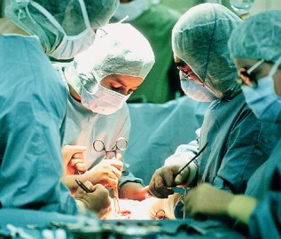
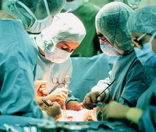

|
Stanford University is located in Palo Alto, it is a private school that is well known. The school is well know for its academeics.The reason that im interested in Stanford is because it can prepare me for medical school and it has lots of study abroad opportunities which is a huge plus for me.Also there are many things within the school to get involved and also get help in. When I'm searching for colleges, I made a complex ranking system based on my personal values including things like location and student life, the more common measures like strength of medical programs, or sciences and desired majors, and at least a dozen other criteria. This got me down to the list of 5 colleges to which I'm interested in applying -- Stanford, UC Davis, UC Santa Cruz, Southen California, and Long Beach.I chose Stanford as my dream school over the rest because I favored the diverse culturebeing in SMASH has made me realize that i love the campus and i feel like im part of something here aswell as beloeng, my experiences while visiting including a very friendly and helpful atmosphere, the increased opportunities outside of classes, and moderate CA coastal climate. I knowe I can get top notch academics at a number of schools, but I valued how happy Stanford students tend to be (of course, Stanford will be what you make of it and not everyone will be happy). At the end of the day, I wanted to be somewhere where I feel supported, where I could make close friends, and where I would have a higher quality of life. I havent had the best high school experience and I'm not eager to repeat that experience again.I have has a great time at Stanford and truly believe it is the best college in the world for me, plus everytime it has surpassed all of my expectations, as I have gotten to learn more about the school.  


|
A general surgeon is a physician who has been educated and trained in the diagnosis and preoperative, operative, and postoperative management of patient care. Surgery requires knowledge of anatomy, emergency and intensive care, immunology, metabolism, nutrition, pathology, physiology, shock and resuscitation, and wound healing. My main reason was because I saw critical illness within my family at a young age and felt pretty much helpless at the time. I saw the work of doctors and other healthcare professionals who more or less saved the lives of some of the most important people in my life,as well as my own life. Therefore, I couldn't think of a more valuable or fulfilling or personally meaningful career for me. Not to mention the fact that I'm pretty fascinated by the human body, the way it works and the ever-increasing knowledge about how to keep its systems in balance.Recently I have been interest in becoming a surgeon, right now im thinking os an organ surgeon, because they are able to fix something thats not working and give the person a second chance. Giving someone a second chance to live their life and have another opportunity is a huge plus for me. There are many other reasons that interest me, lifelong learning, the opportunity to teach and pass my skills onto others, but mostly, more than any other profession a true sense of being able to make a difference to the community. |